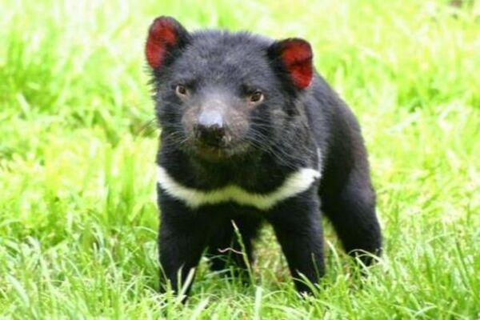

Diabo da Tasmânia (Sarcophilus harrisii)
O diabo-da-tasmânia é um mamífero marsupial, nativo de uma ilha da Austrália, a Ilha da Tasmânia. Está em risco de extinção por conta da diminuição de seu habitat causada pelo desmatamento, outra causa da morte desses mamíferos é o alto índice de doença. Ele pode ser considerado um animal que se assemelha fisicamente a um urso, mas, ele é um animal pequeno, com um porte semelhante ao de um cachorro médio. Possui pêlos pretos e curtos pelo corpo, e na região do pescoço porta uma faixa branca.
Pode ser encontrado em áreas urbanas, mas normalmente habitam florestas e bosques. Essa espécie também é conhecida por ter um temperamento um tanto quanto agressivo, principalmente quando está se alimentando, por conta disso, brigas são muito frequentes para esses animais. São animais carnívoros que andam sozinhos e possuem hábitos noturnos, podendo percorrer mais de 10 km em busca de alimento. Normalmente são vistos juntos quando estão se alimentando da carcaça de animais de grande porte.
São animais que se acasalam uma vez ao ano e a gestação dura em torno de quatro meses. A fêmea dá à luz normalmente entre dois e quatro filhotes, que mamam até os oitos meses, e, a partir daí, começam a se alimentar de outros animais.